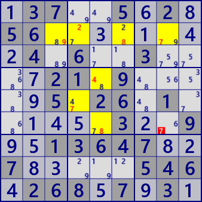
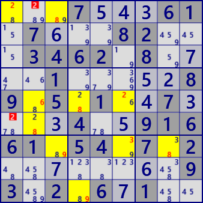

XY Chain
XY-Chain is an analysis algorithm using Locked which occurs in the concatenation of bivalues.
The following figure shows the image of XY-Chain.
Begin with bivalue's cell with a focused digit and concatenate bivalue cells.
In the image diagram, they are connected with different numbers, but the same number may appear.
Chains have a condition. The first and last links must be strong links.
It is assumed that a cell at the tip of a chain has the same number a as the starting cell.
Candidate digit can be excluded in the cell related to the starting cell and leading cell.

Example:
.37..5.2. 56....... .4.6..3.. ..21.9... ..5.26.1. .....3..9 ..13647.. 7.....546 .268.7.3. Puzzle
137..5628 56..3.1.4 24.6..3.. .721.9... .95.26.1. .145.32.9 951364782 783...546 426857931 Current

XY Chain_V7 r6c8 #7 is false
> r2c8#7 - r2c3#9 - r2c6#8 - r2c4#2 - r5c4#7 - r4c5#4 - r6c5#8
Exclude : r6c8 #7
...7...61 .7...82.. .3462.8.. ..1.....8 9.5.1..7. ...4..916 61.54.7.2 ........9 3.2.6.1.. Puzzle
...754361 .76..82.. .3462.8.7 ..1...528 9.5.1.473 ..34.5916 61.54.7.2 ..7...6.9 3.2.671.. Current

XY Chain_V7 r1c2 r6c1 #2 is false
> r1c1#2 - r1c3#8 - r7c3#9 - r7c8#8 - r7c6#3 - r9c4#9 - r5c4#8 - r5c6#2 - r5c2#6 - r6c2#8
Exclude : r1c2 r6c1 #2